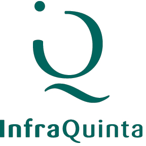
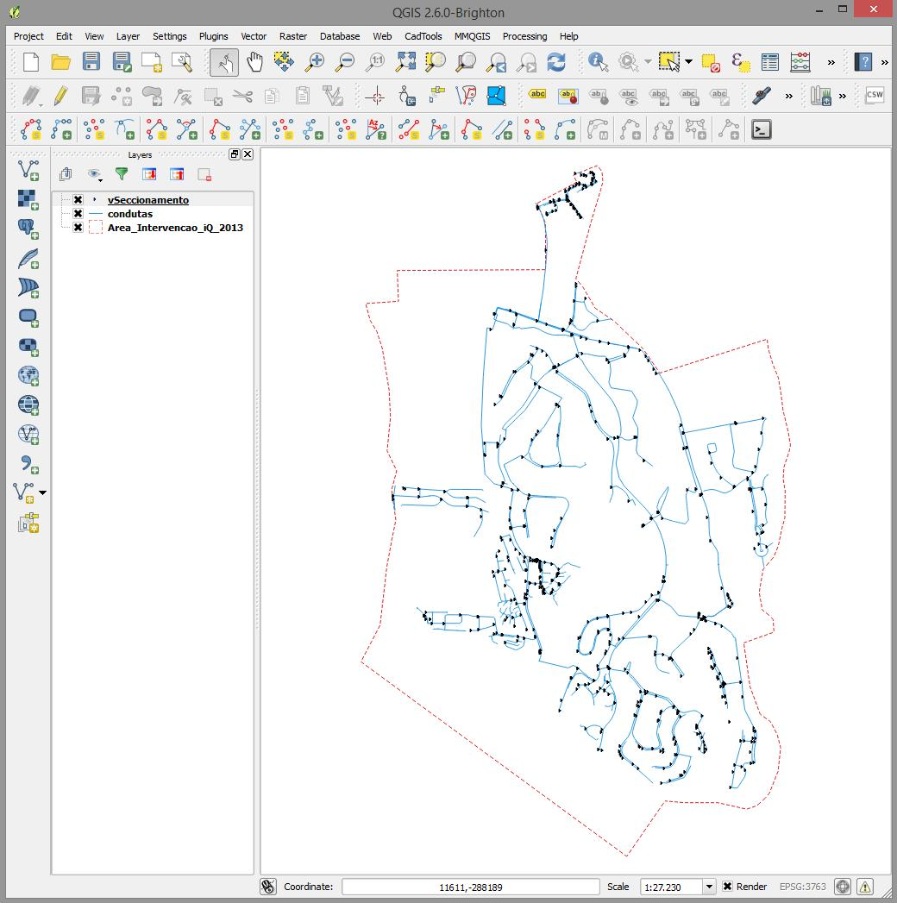
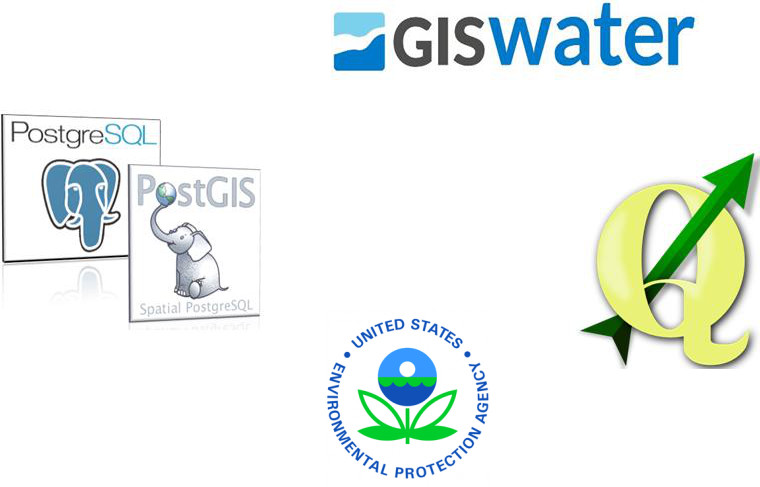
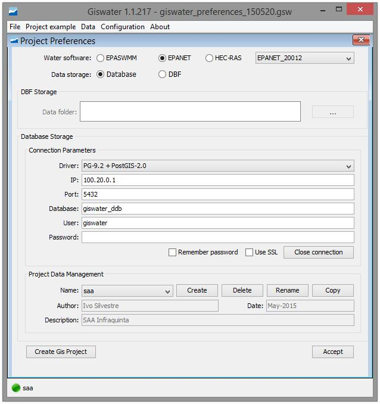
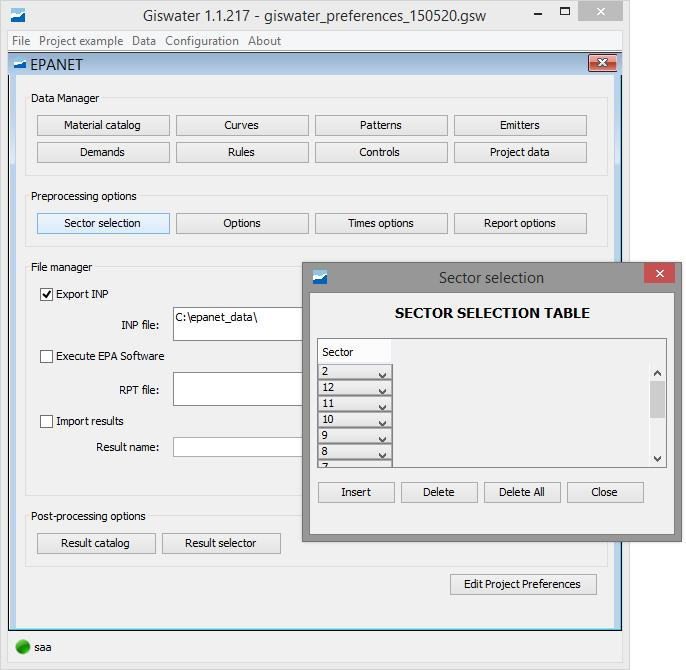
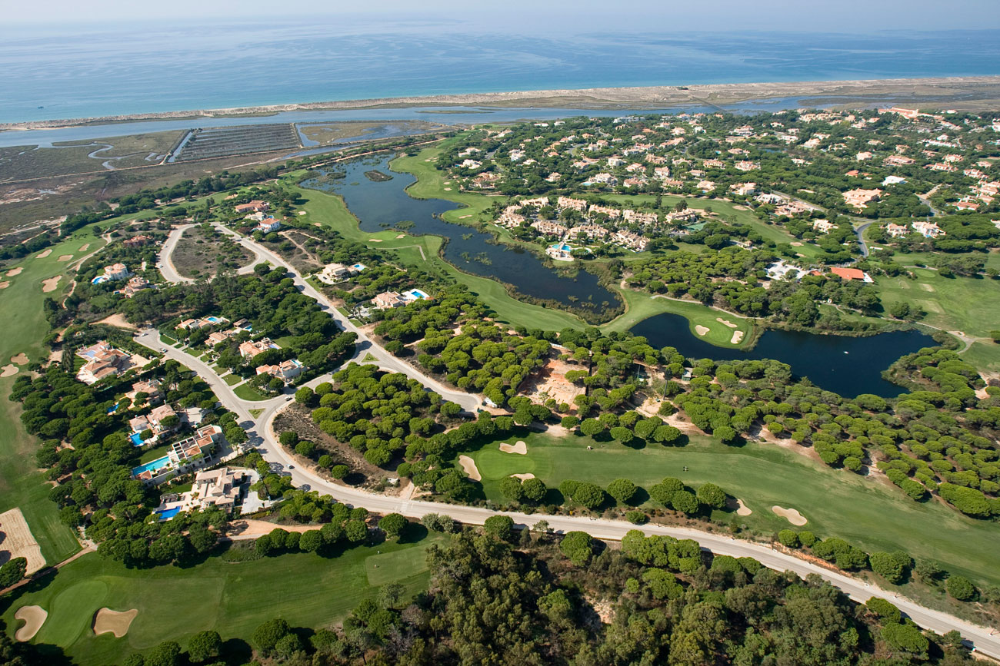
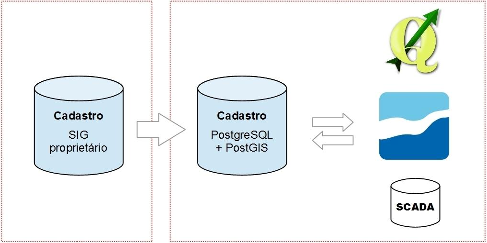
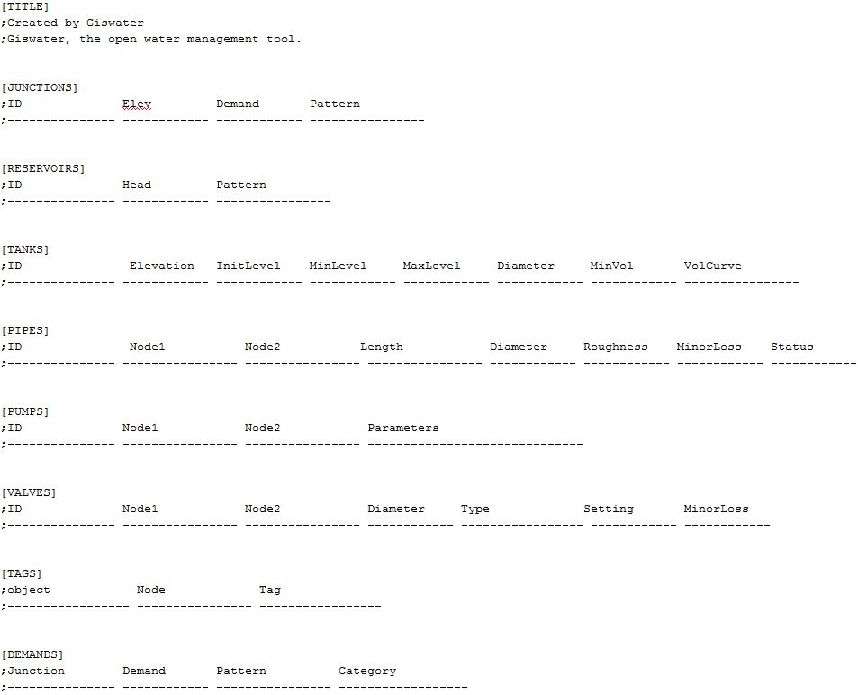
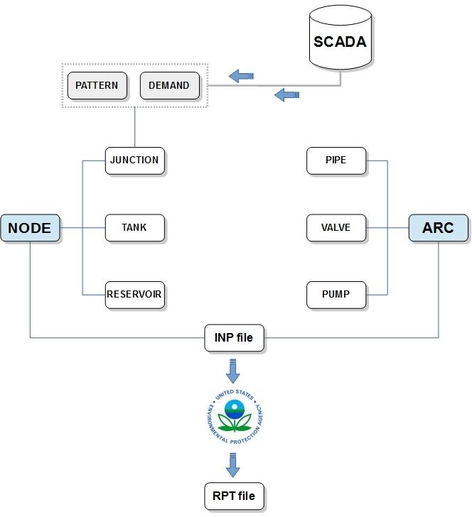
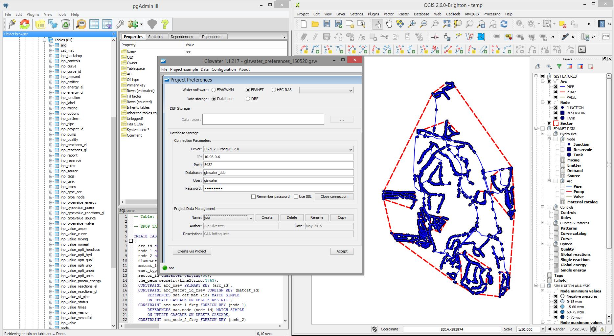

class: left, middle, inverse # GISWATER ### Uma Solução Integrada para Gestão de Redes de Abastecimento de Água. ### Um Caso de Estudo na Quinta do Lago. --- .left-column[ ## Índice ] .right-column[ - A InfraQuinta - Cadastro da Rede de Distribuição de Água - GISWATER - O caso de estudo na Quinta do Lago - Conclusão e Trabalhos Futuros ] --- .left-column[ ## InfraQuinta ] .right-column[ - Entidade gestora das infraestruturas na Quinta do Lago - Rede viária e espaços públicos - Rede de distribuição de água - Rede de drenagem de águas residuais e pluviais  ] --- .left-column[ ## Cadastro da Rede de Distribuição de Água ] .right-column[ - Os SIG e o cadastro da rede de águas - Rede com topologia arco-nó (tubagens-acessórios) - Informação alfanumérica - Metadados ] --- .left-column[ ## Cadastro da Rede de Distribuição de Água ] .right-column[  ] --- .left-column[ ## GISWATER ] .right-column[ - Software de código aberto desenvolvido pela associação GISWATER - Universidade Politécnica da Catalunha (BarcelonaTech) e a empresa BGEO - Fornecer à comunidade uma solução aberta para a gestão de infraestruturas de águas, águas residuais e pluviais - Comunicar programas de simulação hidráulica com bases de dados geográficos através de um SIG desktop  ] --- .left-column[ ## GISWATER v. 1.1.225 (29 Julho, 2015) Código fonte disponível em: https://github.com/Giswater ] .right-column[ - Interligação entre o PostgreSQL+PostGIS / EPANET / QGIS - Principais vantagens: - Gestão e organização de dados - Integração com outros sistemas (telemetria SCADA, software de facturação e gestão de clientes) - GUI intuitivo para gerar projectos QGIS e modelos EPANET ] --- .left-column[ ### GUI GISWATER ] .right-column[  - Conecção a bases de dados PostgreSQL - Criação de projectos QGIS - Gestão de schemas (projectos EPANET) ] --- .left-column[ ### GUI GISWATER ] .right-column[  Facilidade em isolar sectores: - Geração de modelos hidráulicos de zonas especificas - Bastante útil no processo de calibração de modelos ] --- class: center, middle, inverse  # O caso de estudo na Quinta do Lago --- .left-column[ ### Processo de migração ] .right-column[  - Maior velocidade no acesso aos dados - BD GISWater com modelo de dados EPANET - Queries a "tabelas EPANET" e queries espaciais PostGIS - Facilidade de manipulação de ficheiros INP com GISWater ] --- .left-column[ ### Ficheiro INP (EPANET) ] .right-column[  ] --- .left-column[ ### Arquitectura da base de dados ] .right-column[  - Alteração da estrutura para introdução de dados de consumo horários ] --- class: middle  Ambiente de trabalho --- .left-column[ ##Conclusão ] .right-column[ - Organização de dados (dados geográficos e dados de consumos horários) - Gestão mais eficiente de dados - Facilidade em gerar ficheiros INP para o EPANET - Ferramenta de suporte e apoio à decisão ] --- .left-column[ ##Trabalhos futuros ] .right-column[ - Criação de modelos hidráulicos em tempo real --> Planeamento diário - Disponibilização de informação interna e externamente através de aplicações Web (WebSIG e epanet.js) - Apoio à manutenção e operação da rede de distribuição de água - Aplicação em redes de drenagem de águas residuais domésticas e pluviais (EPA SWMM e HEC-RAS) ] --- class: center, middle, inverse # Obrigado! <br></br> ## Ivo Silvestre #### ivo.silvestre@infraquinta.pt